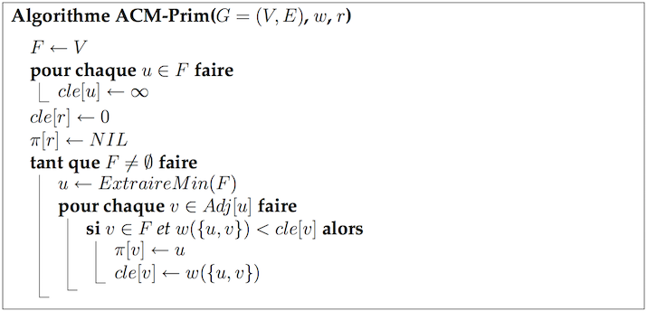
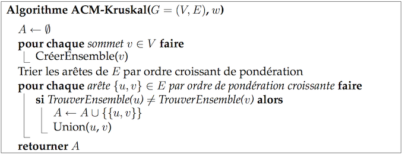

Pour représenter un graphe avec une pondération des arêtes (ou des arcs dans le cas d'un graphe orienté), il est possible d'utiliser un dictionnaire de dictionnaires. Ce n'est certainement pas la seule représentation possible, mais le parcours du graphe et l'obtention des poids est facilitée, comme le montre le code ci-dessous :
G = {
"a": {"b":1, "c":2},
"b": {"a":1, "f":5,"c":10},
"c": {"a":2, "b":10, "f":2, "e":4},
"d": {"f":8, "e":3},
"e": {"c":4, "d":3},
"f": {"b":5, "c":2, "d":8}
}
for u in G:
for v in G[u]:
print("L'arête (%s,%s) a pour poids %d"%(u,v,G[u][v]))
Nous disposons d'un graphe stocké sur un serveur. Pour se connecter au serveur, on
utilise la fonction connectSocket("distrigraphes.info-orleans.fr", 6667).
On dispose aussi des fonctions suivantes qui permettent, une fois connecté au serveur, d'interagir avec celui-ci :
getAVertex() retourne l'un des sommet quelconque du graphe.
getNeighbors(u) retourne la liste des voisins d'un sommet u.
getWeight(u,v) retourne le poids de l'arête (u,v).
SpanningTreeWeight(w) retourne True si et seulement si l'arbre couvrant optimal a pour poids w.
Cette dernière fonction vous servira à vérifier que le poids de votre arbre couvrant est bien optimal.
L'algorithme de Prim nécessite une file de priorité qui peut être implémentée par un tas.

La classe priority_dict du fichier priority_dict.py implémente déjà une file de priorité.
Voici un exemple d'utilisation :
from priority_dict import priority_dict F = priority_dict() # F est maintenant définie comme une file de priorité F['x'] = 30 # l'élément x a pour clé 30 F['y'] = 10 F['z'] = 20 while F: u = F.pop_smallest() print(u) if u=='y': F['x'] = 5 >>> y >>> x >>> z
Vous devez implémenter l'algorithme de Prim pour calculer un arbre couvrant de poids minimum.
Une fois que vous avez calculé le poids w de cet arbre, un appel à la fonction
SpanningTreeWeight(w) retournera True si celui-ci est correct. (En fait, cette fonction
va interroger le serveur pour savoir si le graphe envoyé admet bien un arbre couvrant ayant ce poids.)
L'algorithme de Kruskal nécessite une structure de données pour des ensembles disjoints.

Le fichier UnionFind.py contient une implémentation d'une structure de données
pour ensembles disjoints.
Voici un exemple d'utilisation :
S = UnionFind() # crée une famille S d'ensembles disjoints
S['a'] # retourne le représentant de l'ensemble contenant a, si un tel ensemble n'existe pas
# alors le singleton {a} est d'abord créé
S['c']
S['g']
S['t'] # on a maintenant 4 singletons dans la structure S : {a}, {c}, {g}, {t}
S.union('a','c')
if S['g'] != S['t']:
S.union('g','t')
print(S)
>>> {{'a', 'c'},{'g', 't'}}
Implémentez l'algorithme de Kruskal afin de calculer un arbre couvrant du graphe contenu dans le fichier graphe.txt.
Vérifier que le poids de l'arbre retourné par votre implémentation de l'algorithme de Kruskal est égal à 275.